A robot can only set its wheel speeds, but every task is stated in places: “go to the door”. A model of the robot’s motion connects the two, so that we can predict where wheel commands take the robot and choose the commands that reach a goal.
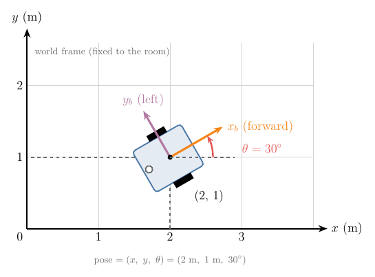
Figure 1: A small two-wheeled robot on a floor grid at x = 2 m, y = 1 m, facing 30 degrees left of the x-axis, with its own forward and left axes drawn on it
The only thing a wheeled robot can do is spin its motors. Everything we want from it is about places: drive to the door, stay in the lane, park in the corner. So we need a model that answers two questions, one in each direction:
Prediction: if the wheels spin at these speeds, where will the robot be in two seconds?
Control: to get to the door, at what speeds should the wheels spin?
Both questions need a precise way to say where the robot is, and a rule linking wheel speeds to changes in that position. In this Note we build both for the robot in Figure 1, which has two driven wheels like most indoor robots:
three numbers that say where the robot is, and why position alone is not enough (Section 2);
why a rolling wheel’s spin tells us its speed over the floor (Section 3);
the link from the two wheel speeds to the robot’s forward speed and turn rate, derived from one fact about turning bodies, and the link back (Section 4);
how those speeds move the robot over the floor, and how to predict its path step by step (Section 5);
why the robot cannot slide sideways, and why it can still reach every pose (Section 6).
Cars and trailers follow the same model with stricter limits; the car-like robots Note later in this chapter covers them.
2. Pose: where the robot is
Key point
Position alone does not tell us where the robot will go next; we also need the direction it faces. Position (x,y) plus heading θ, measured in an agreed frame, is the pose.
2.1 Why we need a frame
“The robot is at (2, 1)” means nothing until we say measured from where, and along which directions. Figure 2 shows the problem: measured from the corner of the room, A, a robot is at (2, 1); measured from the corner of a rug, B, the same robot is at (1, 0.5).
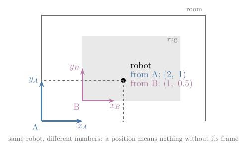
Figure 2: The same robot measured from two frames: from the room corner A it is at (2, 1), from the rug corner B at (1, 0.5)
So we first agree on a reference: a corner of the room as the origin, with an x-axis along one wall and a y-axis along the other. Such a choice of origin and axes is a coordinate frame ()Coordinate frame: A chosen origin and set of axes used to give positions as numbers; every position or pose is stated relative to some frame. Explained in §2.1 Why we need a frame.. The frame fixed to the room is the world frame ()World frame: The coordinate frame fixed to the surroundings (for example a corner of the room), in which the robot’s pose is given. Explained in §2.1 Why we need a frame.; every position in this Note is measured in it.
2.2 Why position is not enough: the heading
Take two robots at the same spot, (2, 1), both driving forward at 0.5 m/s for one second. One faces along the x-axis, the other along the y-axis:
Robot faces
Where it is after 1 s
along x
(2.5, 1)
along y
(2, 1.5)
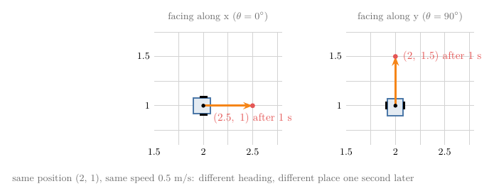
Figure 3: Two robots at (2, 1) drive forward at 0.5 m/s for one second: the one facing along x ends at (2.5, 1), the one facing along y at (2, 1.5)
Figure 3 draws the two runs: same position, same speed, different result. To predict motion we must also record the direction the robot faces, its heading ()Heading θ: The angle from the world x-axis to the direction a robot faces, measured counter-clockwise; it decides which way the robot moves when it drives forward. Explained in §2.2 Why position is not enough: the heading.: the angle θ from the world x-axis to the robot’s forward direction.
Angles are measured counter-clockwise, so a robot facing along y has θ=90∘.
Together, position and heading are the robot’s pose ()Pose: Where a robot is and which way it faces: on a floor, its position (x,y) and heading θ, such as (2 m, 1 m, 30°); needed because a robot at one spot drives off differently depending on its heading. Explained in §2.2 Why position is not enough: the heading.. For the robot in Figure 1:
x=2 my=1 mθ=30∘
2.3 Why angles are measured in radians
Key point
In radians, the arc a turning point travels is simply radius times angle, with no conversion factor; every formula in this Note relies on that.
We will often need this: a point at distance d from a centre turns by some angle; how far does it travel along its arc? A full turn travels the whole circumference, 2πd, and a part of a turn travels the same part of the circumference.
Try it in degrees, with d=0.5 m and a turn of 30°. Thirty degrees is one twelfth of a full turn:
36030×2π×0.5=0.262 m
Multiplying the radius by the angle in degrees gives nonsense:
0.5×30=15 m
Degrees need the extra factor 2π/360 every time. So we measure angles in a unit that already contains it: the radian ()Radian: The unit of angle at which the arc of a circle is as long as its radius; a full turn is 2π rad, and with radians an arc is simply radius times angle. Explained in §2.3 Why angles are measured in radians., where a full turn is 2π radians. Then 30° is:
30×3602π=0.524 rad
and the arc is radius times angle, with nothing else:
arc=d×Δθ0.5×0.524=0.262 m
Figure 4 shows where the radian comes from. Bend a piece of string as long as the radius onto the circle: the angle it covers is one radian, about 57.3°. Keep laying radius-long pieces round the rim, and a full turn takes 6.283 of them, which is why a full turn is 2π radians.
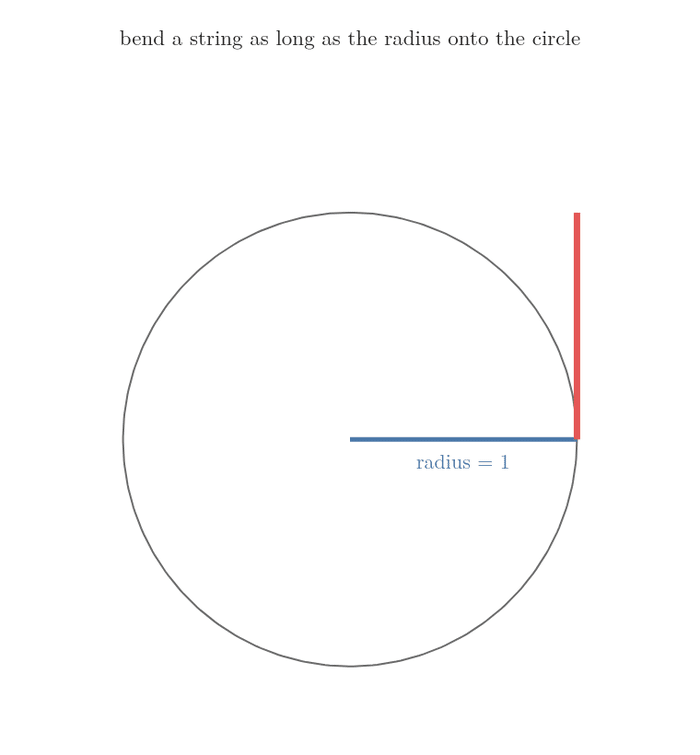
Figure 4: A string as long as the radius is bent onto the circle and covers 1 radian; laying radius-long pieces round the rim, a full turn takes 6.283 of them
This arc rule is the reason the wheel formula (Section 3), the turning formulas (Section 4) and the cosine and sine functions of Python’s numpy all work in radians.
3. The differential-drive robot
Key point
Two motorised wheels on one axle are enough to drive anywhere and even to spin on the spot. If a wheel rolls without slipping, its speed over the floor is its radius times its spin rate.
3.1 Why two wheels and a caster
A differential-drive ()Differential drive: A robot with two independently driven wheels on one axle (plus a caster); it steers by running the wheels at different speeds and can spin on the spot. Explained in §3.1 Why two wheels and a caster. robot has two driven wheels on a common axle, each turned by its own motor. It is the most common way to drive an indoor robot (LaValle §13.1.2.2), because two motors are enough for everything: driving, turning and spinning on the spot (Section 4.4). Two wheels on one axle would tip over, so a third, free-swivelling caster wheel ()Caster wheel: A free-swivelling, undriven wheel, like the one under an office chair; it supports a robot without steering it. Explained in §3.1 Why two wheels and a caster., like the wheel under an office chair, holds the robot up without steering it (LaValle §13.1.2.2).
There is no steering wheel. The robot turns only through the difference between its two wheel speeds, and that is where the name “differential” comes from.
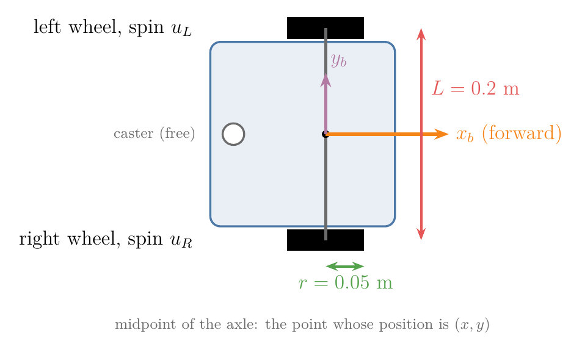
Figure 5: Top view of a differential-drive robot: right and left wheels of radius r, the distance L between them, the caster at the back, and the midpoint of the axle
Figure 5 shows the only two measurements the model needs, with the values we use throughout. Both can be measured with a ruler:
r=0.05 m(wheel radius)L=0.2 m(wheel separation)
3.2 Why wheel spin gives ground speed: rolling without slipping
Key point
A wheel that does not skid lays its rim down on the floor as it turns, so it moves forward by exactly the length of rim it turns.
A motor tells us how fast the wheel spins, in radians per second. What we need is how fast the robot moves over the floor, in metres per second. The link is the wheel’s grip.
A wheel rolls without slipping ()Rolling without slipping: A wheel moving so that its contact point does not skid: it moves forward by its radius times the angle it turns and never slides sideways, which is what lets wheel turns predict motion. Explained in §3.2 Why wheel spin gives ground speed: rolling without slipping. when the point touching the floor does not skid. Each bit of rim that comes down touches the floor once and stays put while touching. So the wheel moves forward by exactly the length of rim it has turned (Figure 6). One full turn lays down the whole circumference:
2π×r=6.283×0.05=0.314 m
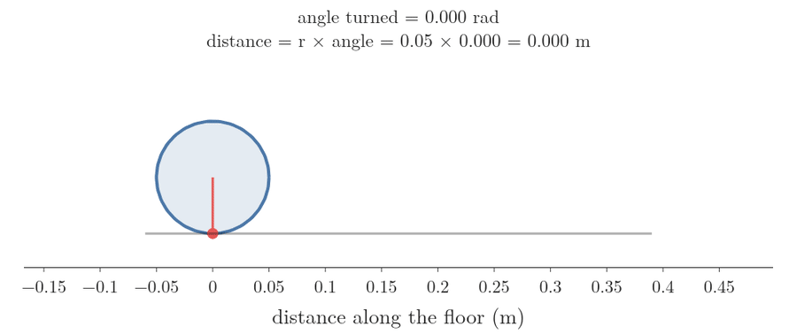
Figure 6: A wheel of radius 0.05 m rolls one full turn along the floor; a marked point on its rim traces the turn, and the wheel ends 0.314 m further on
A part of a turn lays down the same part of the rim, which is the arc rule of Section 2.3: radius times angle. So a wheel spinning at a rate u (radians per second) moves over the floor at:
vwheel=ru
We write uR and uL for the spin rates of the right and left wheels, and vR and vL for their ground speeds. With the right wheel spinning at 12 rad/s and the left at 8 rad/s:
vR=0.05×12=0.6 m/svL=0.05×8=0.4 m/s
Extra
Real wheels slip a little, more on smooth floors and in fast turns. The formula then overestimates the distance moved, and a robot that tracks its position by counting wheel turns slowly drifts away from the truth. Later Notes on motion models and wheel odometry deal with that error.
4. From wheel speeds to robot speeds and back
Key point
The robot’s forward speed is the average of the two wheel speeds, and its turn rate is their difference divided by the wheel separation. Both follow from one fact: a turning rigid body circles a single point.
4.1 Why we describe motion by forward speed and turn rate
Wheel speeds are what the motors take, but they are an awkward way to think. Asked how to drive to the door, nobody says “right wheel 0.35 m/s, left wheel 0.25 m/s”; we say “not too fast, and bear left”. So we describe the motion of the whole robot with two numbers that match that way of thinking (Figure 7):
its forward speed ()Forward speed v: How fast a robot’s reference point (for a differential drive, the middle of the axle) moves along its heading, in m/s; for a differential drive, the average of the two wheel speeds. Explained in §4.1 Why we describe motion by forward speed and turn rate.v: how fast the midpoint between the wheels moves along the heading, in metres per second;
its turn rate ()Turn rate ω: How fast a robot’s heading changes, in rad/s, positive to the left; for a differential drive, the difference of the wheel speeds divided by the wheel separation. Explained in §4.1 Why we describe motion by forward speed and turn rate.ω (omega): how fast the heading θ changes, in radians per second, positive to the left.
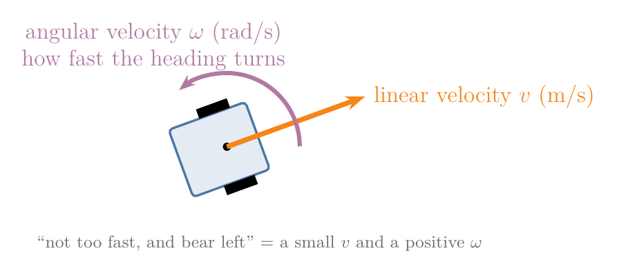
Figure 7: A robot with a straight arrow for its forward speed v along the heading and a curved arrow for its turn rate omega, positive to the left
A controller decides v and ω; this section finds the formulas that convert them to wheel speeds and back.
4.2 Why the robot turns about a point on its axle line
Key point
Each wheel can only move straight ahead, square to the axle. The only centre the whole body can turn about that allows this lies on the axle line.
When a rigid body turns, every point of it moves on a circle around one centre, and its velocity at each moment points square to the line from that centre. Our two wheels must move straight ahead, because they cannot slide sideways (Section 6). Straight ahead is square to the axle. So the line from the centre to each wheel must be the axle line itself: the centre lies somewhere on the line through the axle.
That centre is the turning point, also called the instantaneous centre of curvature. Its distance from the robot’s midpoint is the turning radius ()Turning radius R: The distance from the point a robot is turning about (the turning point, or instantaneous centre of curvature) to the robot’s reference point; R=v/ω, so it says how tight a turn is. Explained in §4.2 Why the robot turns about a point on its axle line.R.
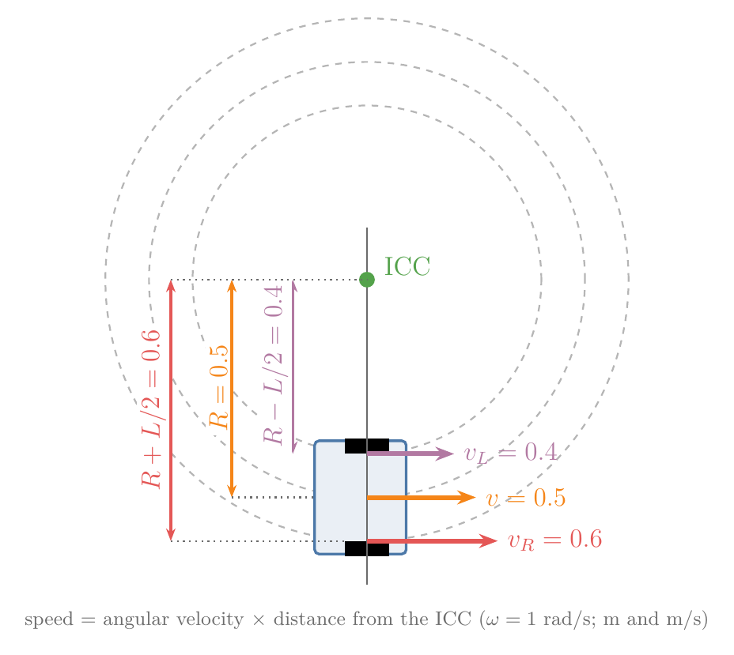
Figure 8: The robot turning about a point on its axle line. The right wheel is at distance R + L/2, the midpoint at R, the left wheel at R − L/2; their velocity arrows grow in proportion to the distance
The whole body turns by the same angle in each second, the turn rate ω. By the arc rule of Section 2.3, a point at distance d from the centre then travels ω times d metres per second. Points farther out move faster (Figure 8):
speed=ω×distance
For a left turn, the right wheel sits half the wheel separation farther out than the midpoint, and the left wheel half the separation closer in:
vR=ω(R+L/2)vL=ω(R−L/2)v=ωR
4.3 Wheel speeds to forward speed and turn rate
Key point
Subtracting the two wheel equations isolates ω; adding them isolates v.
Turn rate. Subtract the left-wheel line from the right-wheel line. The ωR parts cancel, leaving only the separation:
vR−vL=ω(L/2+L/2)vR−vL=ωLω=LvR−vL
The formula says why a wide robot turns more lazily: the same speed difference has to swing a longer axle. With a speed difference of 0.2 m/s:
Wheel separation L
Turn rate ω
0.2 m
1 rad/s
0.4 m
0.5 rad/s
Forward speed. Add the two lines. The ωL/2 parts cancel:
vR+vL=2ωRvR+vL=2vv=2vR+vL
The midpoint moves at the average speed of the wheels because it sits halfway between them.
Worked example. With our wheel speeds, the forward speed is:
v=20.6+0.4=0.5 m/s
The turn rate is:
ω=0.20.6−0.4=1 rad/s
The turning radius follows from v=ωR:
R=v/ωR=0.5/1=0.5 m
Going from the wheel speeds to the robot’s motion is the forward kinematics ()Forward kinematics (wheeled robot): Working out the robot’s forward speed and turn rate from its wheel speeds, used to predict where the robot goes. Explained in §4.3 Wheel speeds to forward speed and turn rate. of the robot. It answers half of the prediction question of Section 1; Section 5 finishes it.
4.4 Four ways to drive
Key point
Equal wheel speeds drive straight, opposite speeds spin on the spot, one stopped wheel pivots about that wheel, and anything else drives on a circle.
The two formulas predict four kinds of motion. Figure 9 plays each one for two seconds; the green dot is the turning point.
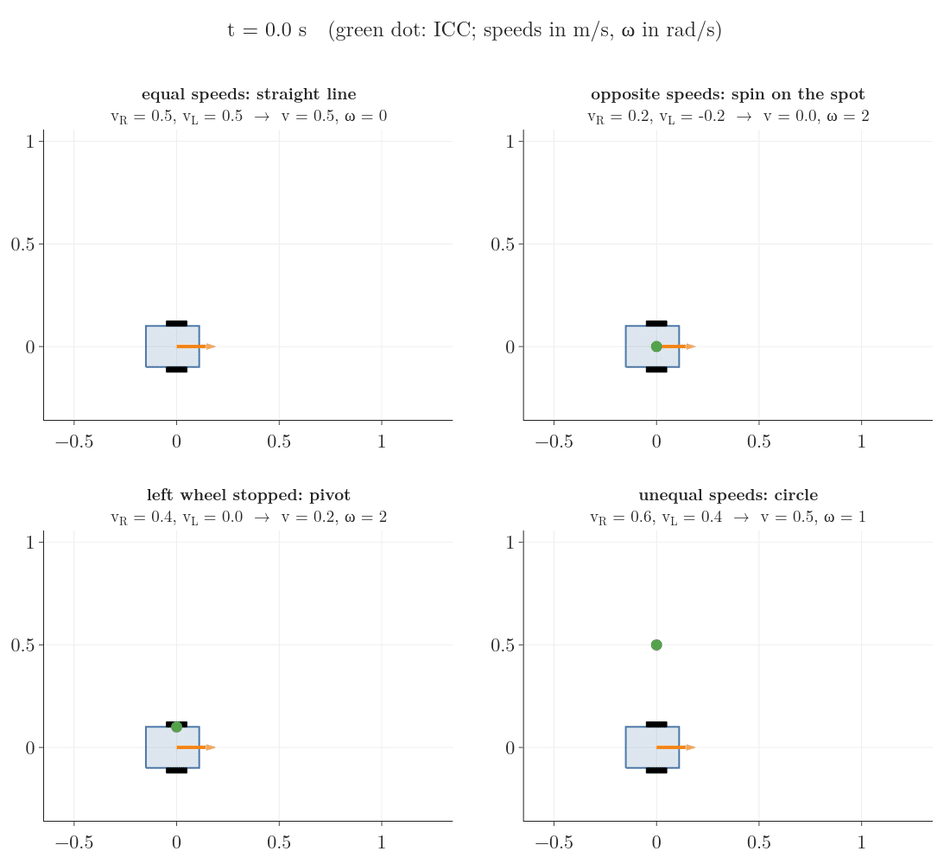
Figure 9: Four motions of the robot, each played for two seconds with its trail: equal wheel speeds drive straight; opposite speeds spin in place; a stopped left wheel pivots about that wheel; unequal speeds drive on a circle of radius 0.5 m
Wheel speeds vR, vL (m/s)
v (m/s)
ω (rad/s)
R (m)
Motion
0.5, 0.5
0.5
0
none
straight line
0.2, −0.2
0
2
0
spin on the spot
0.4, 0
0.2
2
0.1
pivot about the left wheel
0.6, 0.4
0.5
1
0.5
circle to the left
Why each happens:
Straight line. Equal speeds have no difference, so ω=0: nothing turns the heading. The turning point is infinitely far away.
Spin on the spot. Opposite speeds add up to zero, so v=0: the midpoint stays put while the heading turns.
Pivot. A stopped wheel does not move, so it must be the turning point itself; the table confirms a turning radius of 0.1 m, exactly half the wheel separation.
The spin on the spot is what makes the differential drive so easy to steer: it can face any direction first and then drive straight (LaValle §13.1.2.2). A car cannot, as the car-like robots Note later in this chapter shows.
4.5 Back again: the wheel speeds for a wanted motion
Key point
To drive with forward speed v and turn rate ω, run the right wheel at v+ωL/2 and the left wheel at v−ωL/2.
The control question of Section 1 goes the other way: the controller has chosen v and ω and must send wheel commands. This is the inverse kinematics ()Inverse kinematics (wheeled robot): Working out the wheel speeds that give a wanted forward speed and turn rate, used by a controller to command the motors. Explained in §4.5 Back again: the wheel speeds for a wanted motion. of the robot. Solve the two formulas of Section 4.3 for the wheel speeds:
vR=v+ωL/2vL=v−ωL/2
Each wheel runs at the midpoint’s speed, plus or minus the extra speed it needs for being half an axle farther out or closer in. Then divide by the wheel radius to get the spin rates for the motors.
Worked example. We want 0.3 m/s while bearing left at 0.5 rad/s. The extra speed for half an axle:
ωL/2=0.5×0.1=0.05 m/s
The wheel speeds:
vR=0.3+0.05=0.35 m/svL=0.3−0.05=0.25 m/s
The spin rates:
uR=0.35/0.05=7 rad/suL=0.25/0.05=5 rad/s
Figure 10 shows why the two wheels differ. The wanted motion is a circle of radius 0.6 m (the turning radius, v divided by ω); the right wheel runs on the outside of it and must cover more ground in the same time than the left wheel on the inside.
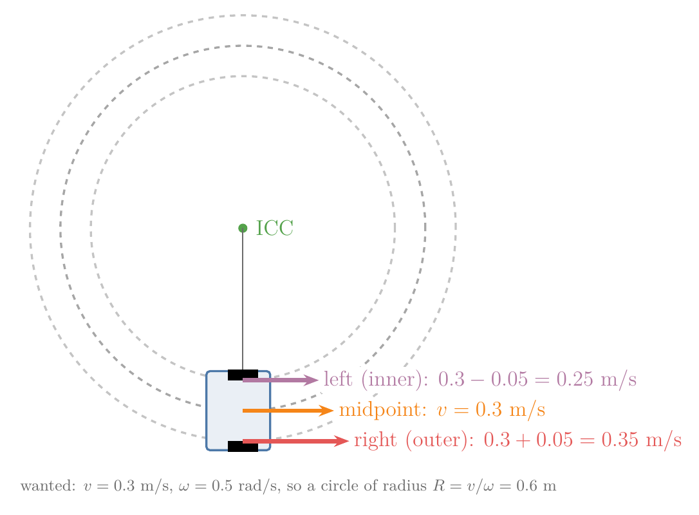
Figure 10: The wanted motion, v = 0.3 m/s and omega = 0.5 rad/s, is a circle of radius 0.6 m: the outer right wheel needs 0.35 m/s, the midpoint 0.3 m/s and the inner left wheel 0.25 m/s
As a check, feeding 7 and 5 rad/s back into the forward kinematics of Section 4.3 must return 0.3 m/s and 0.5 rad/s, and it does (the Python box below).
Python: both directions in four lines.
r, L = 0.05, 0.2 # wheel radius, wheel separation (m)def forward(uR, uL): # spin rates (rad/s) -> v (m/s), omega (rad/s) return r * (uR + uL) / 2, r * (uR - uL) / Ldef inverse(v, omega): # v, omega -> spin rates (rad/s) return (v + omega * L / 2) / r, (v - omega * L / 2) / rinverse(0.3, 0.5) # (7.0, 5.0)forward(7, 5) # (0.3, 0.5): back where we started
5. From robot speeds to motion on the floor
Key point
The robot moves along its heading, so its forward speed splits into an x part vcosθ and a y part vsinθ. Because the heading keeps changing, we predict the path in many small steps.
5.1 Why the speed splits into cosine and sine parts
The robot knows its forward speed, but the map needs to know how fast x and y change. The robot moves in the direction it faces, so the share of its speed that goes into x and into y depends on the heading. The two extremes are easy:
facing along x (θ=0∘): all of the speed goes into x, none into y;
facing along y (θ=90∘): all of it goes into y, none into x.
In between, the speed is shared. Draw the velocity as an arrow of length v at angle θ (Figure 11). It is the long side of a right-angled triangle whose two short sides are the x speed and the y speed.
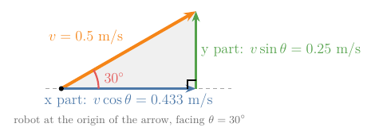
Figure 11: The velocity arrow of length 0.5 m/s at 30 degrees, with its x part 0.433 m/s and its y part 0.25 m/s drawn as the two short sides of a right-angled triangle
The cosine and sine of an angle are defined as exactly these shares of the long side:
cosθ is the side along x divided by the long side;
sinθ is the side along y divided by the long side.
So the x speed is vcosθ and the y speed is vsinθ. The extremes check out: cos0∘=1 and sin0∘=0 (everything along x); cos90∘=0 and sin90∘=1 (everything along y).
Worked example. At θ=30∘, cos30∘=0.866 and sin30∘=0.5. With v=0.5 m/s:
x speed=vcosθ=0.5×0.866=0.433 m/sy speed=vsinθ=0.5×0.5=0.25 m/s
5.2 The kinematic model
Key point
Three equations give how fast each number of the pose changes, from the two inputs v and ω.
We need a short way to write “how fast this changes”. A dot over a symbol means its rate of change per second, the derivative with respect to time ()Dot notation x˙: A dot over a quantity means its rate of change per second (its derivative with respect to time), such as x˙=0.433 m/s; models of motion are written with it. Explained in §5.2 The kinematic model.. For example, x˙=0.433 m/s means x grows by 0.433 m each second.
The x speed and y speed of Section 5.1 are x˙ and y˙. The heading changes at the turn rate, by the definition of ω in Section 4.1. Together:
x˙=vcosθy˙=vsinθθ˙=ω
This is the kinematic model ()Kinematic model: Equations that give how a robot’s configuration changes from its speed inputs alone, ignoring masses and forces, such as x˙=vcosθ, y˙=vsinθ, θ˙=ω; used to predict motion at low speed. Explained in §5.2 The kinematic model. of the differential-drive robot. “Kinematic” means it uses speeds only, not masses or forces. That is safe while the robot moves slowly, because then the wheels follow their commands closely; at high speed, skidding and inertia matter and a dynamic model is needed (LaValle §13.1.2.1). The two numbers we choose, u=(v,ω), are the control inputs ()Control input u: The numbers we choose to drive a robot, such as u=(v,ω); the model turns them into motion. Explained in §5.2 The kinematic model.. A sanity check: at θ=0 the model gives x˙=v and y˙=0, straight along x, as it should.
5.3 Why we predict the path step by step
Key point
The direction of motion changes as the heading turns, so we cannot just multiply speed by time. Over a short step the heading hardly changes, so we treat it as fixed, move, and repeat.
Speed times time gives distance only if the direction stays the same. Here the heading turns at 1 rad/s, so the direction of motion changes all the time. But over a short time step Δt the heading changes only a little, so we can treat the rates as fixed during the step and add them up. This is an Euler step ()Euler step: One step of predicting motion: hold the rates fixed for a short time Δt and add rate times Δt to each quantity; repeated, it traces a path, more accurately the smaller Δt is. Explained in §5.3 Why we predict the path step by step.:
xnew=x+x˙Δtynew=y+y˙Δtθnew=θ+θ˙Δt
Worked example. Start at the pose of Figure 1, keep v=0.5 m/s and ω=1 rad/s, and take steps of Δt=0.1 s. The first step:
The heading has changed, so the next step uses new rates:
Step
x (m)
y (m)
θ (rad)
x˙ (m/s)
y˙ (m/s)
0
2.0000
1.0000
0.5236
0.4330
0.2500
1
2.0433
1.0250
0.6236
0.4059
0.2920
2
2.0839
1.0542
0.7236
0.3747
0.3310
Figure 12 keeps going. The path bends left, and after about 6.3 s (63 steps) it closes a circle of radius 0.5 m, the turning radius of Section 4.3.
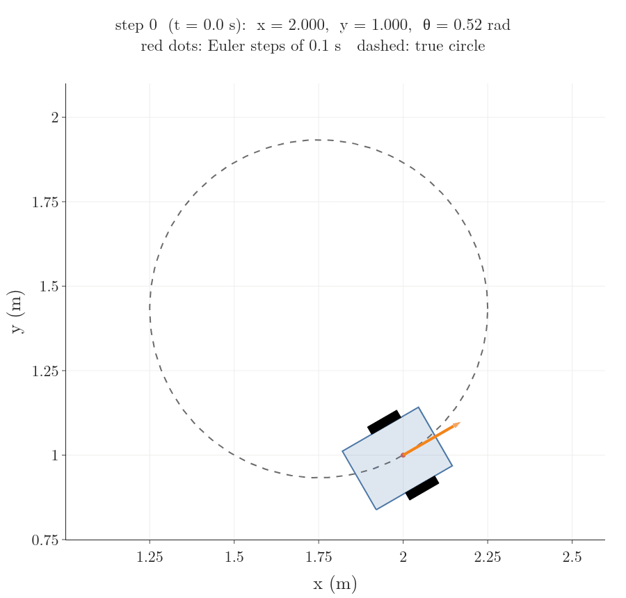
Figure 12: The robot driving from pose (2, 1, 30 degrees) with v = 0.5 m/s and omega = 1 rad/s; dots mark every Euler step of 0.1 s and the trail closes a circle of radius 0.5 m
The prediction is not perfect. Each step moves along a straight line in the direction the robot faced at the start of the step, while the true robot curves. So the predicted path drifts from the true circle (the dashed line in Figure 12). The smaller the step, the less the heading changes within it, and the smaller the drift. The largest gap between the predicted and the true position during one lap:
Step Δt
Largest gap
1 s
51 cm
0.5 s
25 cm
0.1 s
5 cm
0.01 s
0.5 cm
The gap shrinks in step with Δt: a step ten times smaller gives a gap ten times smaller. The notebook RO-001-pose-and-differential-drive.ipynb reproduces this table and lets us try other wheel speeds.
6. The robot cannot slide sideways
Key point
Rolling wheels forbid sideways motion. That limits which way the robot can move at each moment, but not which poses it can reach; it only means some moves need manoeuvres.
Why does this deserve a section? Many route planners assume a robot can move in any direction from where it stands. A route that needs a step sideways cannot be followed by our robot or by a car, so those planners cannot be used as they are (MR §13.3.3). So we need to know exactly what the rule forbids, and what it does not.
6.1 The rule: no sideways motion
A wheel rolls along its own direction but grips against sliding sideways (LaValle §13.1.2.1). So the robot’s midpoint can move forward or backward, never along its own left–right axis. In words: the robot’s velocity has no part pointing to its left.
The kinematic model of Section 5.2 already obeys this rule. Its velocity, x˙=vcosθ and y˙=vsinθ, is the forward speed split along the heading (Section 5.1), so it always points the way the robot faces. Its two inputs are “drive forward” (v) and “turn” (ω); “slide sideways” is not among them. Of the three numbers of the pose, the robot can change only two directly at each moment.
6.2 Can the robot still get everywhere?
Key point
Not sliding sideways limits which way the robot can move right now, not where it can end up. A limit like that is called nonholonomic.
The robot cannot move to its left. Can it still get to a spot 0.5 m to its left? Yes, with three legal moves (Figure 13):
Spin 90° to the left on the spot.
Drive 0.5 m forward.
Spin 90° back to the right.
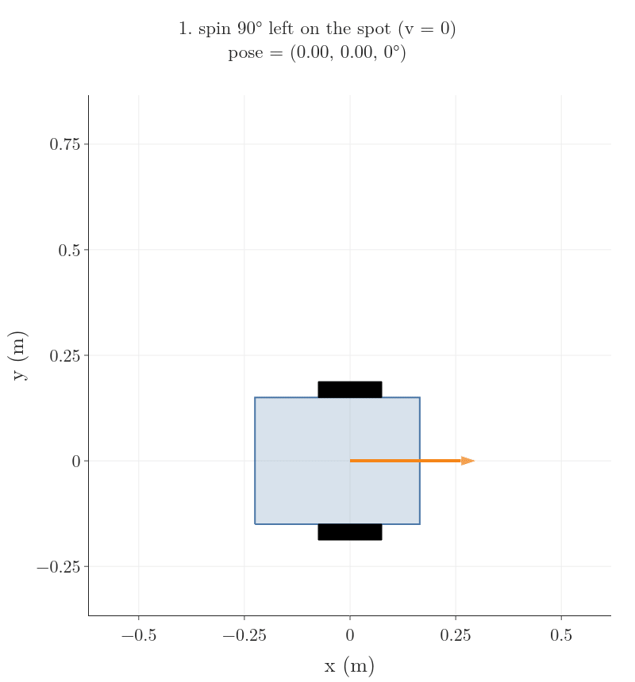
Figure 13: The robot moves 0.5 m sideways using only legal moves: spin 90 degrees left, drive 0.5 m, spin 90 degrees right. It ends 0.5 m to the left of where it started, facing the same way
It ends 0.5 m to the left, facing the same way. The same trick reaches any pose: turn to face the spot, drive straight to it, then turn to the heading you want. A car does the same when it parallel parks into a space it cannot drive into sideways (LaValle §13.1.2.1).
Compare a toy train on a circular track of radius 5 m (Figure 14). Its limit is on where it can be: whatever it does, it stays on the circle, the points where x2+y2=25.
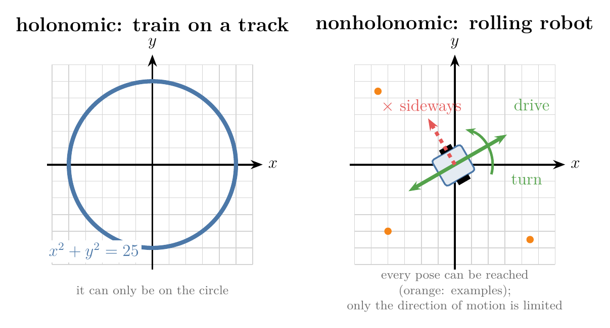
Figure 14: Left: a train on a circular track of radius 5 m can only be on the circle. Right: the robot at one pose can only move along its heading, yet it can reach any pose on the floor
These two kinds of limit have names (MR §2.4):
a holonomic constraint ()Holonomic constraint: An equation on a robot’s pose, such as a train on a circular track x2+y2=25, or a velocity rule that follows from one; it removes whole poses the system can never be in. Explained in §6.2 Can the robot still get everywhere?. limits where a system can be, like the train’s track;
a nonholonomic constraint ()Nonholonomic constraint: A rule on velocities that does not follow from any equation on the pose, such as a wheel that cannot slide sideways; it limits which way a robot can move at each moment but not which poses it can reach. Explained in §6.2 Can the robot still get everywhere?. limits only which way it can move at each moment, and every place stays reachable, like the robot’s wheels.
Holonomic
Nonholonomic
Limits
where it can be
which way it can move right now
Example
train on a track
wheel that cannot slide sideways
Reachable poses
only those on the track
all of them
7. Summary
Robot
Pose
Inputs
So it can
Differential drive
(x,y,θ)
v, ω from two wheel speeds
spin on the spot, then drive straight
The pose (x,y,θ) says where a floor robot is, because position alone does not say which way it will drive off.
Angles are in radians, so a turning point’s arc is radius times angle, with no conversion factor.
A wheel that rolls without slipping moves at r times its spin rate, because it lays its rim down on the floor.
The forward speed is the average of the wheel speeds and the turn rate is their difference over L, because the rigid robot turns about one point on its axle line and each point’s speed is turn rate times distance.
Controllers think in v and ω, and the inverse formulas turn those into wheel commands, so the controller never has to reason in wheel speeds.
The kinematic model gives the rates of x, y and θ; the heading keeps turning, so we predict the path in small Euler steps, and smaller steps drift less.
The wheels forbid sideways motion, a nonholonomic constraint: it removes one direction of motion at each moment but no reachable pose, so the robot gets anywhere with manoeuvres such as spin–drive–spin or parallel parking.
So the two questions of the opening have their answers: the forward formulas and Euler steps predict where wheel commands take the robot, and the inverse formulas give the commands for a chosen motion.
Georgia Institute of Technology, “Control of Mobile Robots, 2.2 Differential Drive Robots”, YouTube (re-upload of the Coursera course), https://www.youtube.com/watch?v=aE7RQNhwnPQ
Carlotta A. Berry, PhD, “Advanced Mobile Robotics: Lecture 1-2b - Forward Kinematics w\ Instantaneous Center of Curvature”, YouTube, https://www.youtube.com/watch?v=zx5n6wrl38U
LaValle, S. M. (2006). Planning Algorithms. Cambridge University Press. §13.1.2.1 “A simple car”, §13.1.2.2 “A differential drive”. Free online: https://lavalle.pl/planning/node657.html (LaValle)
Lynch, K. M. and Park, F. C. (2017). Modern Robotics: Mechanics, Planning, and Control. Cambridge University Press. §2.4 holonomic and nonholonomic constraints, §13.3.1 the canonical nonholonomic model, §13.3.3 Dubins and Reeds-Shepp paths. Free preprint: http://modernrobotics.org (MR)
Terms taught in this Note come first; linked terms are recaps, taught in the Note the link opens.
Term
Meaning
Coordinate frame ()Coordinate frame: A chosen origin and set of axes used to give positions as numbers; every position or pose is stated relative to some frame. Explained in §2.1 Why we need a frame.
A chosen origin and set of axes used to give positions as numbers; every position or pose is stated relative to some frame.
World frame ()World frame: The coordinate frame fixed to the surroundings (for example a corner of the room), in which the robot’s pose is given. Explained in §2.1 Why we need a frame.
The coordinate frame fixed to the surroundings (for example a corner of the room), in which the robot’s pose is given.
Heading θ ()Heading θ: The angle from the world x-axis to the direction a robot faces, measured counter-clockwise; it decides which way the robot moves when it drives forward. Explained in §2.2 Why position is not enough: the heading.
The angle from the world x-axis to the direction a robot faces, measured counter-clockwise; it decides which way the robot moves when it drives forward.
Pose ()Pose: Where a robot is and which way it faces: on a floor, its position (x,y) and heading θ, such as (2 m, 1 m, 30°); needed because a robot at one spot drives off differently depending on its heading. Explained in §2.2 Why position is not enough: the heading.
Where a robot is and which way it faces: on a floor, its position (x,y) and heading θ, such as (2 m, 1 m, 30°); needed because a robot at one spot drives off differently depending on its heading.
Radian ()Radian: The unit of angle at which the arc of a circle is as long as its radius; a full turn is 2π rad, and with radians an arc is simply radius times angle. Explained in §2.3 Why angles are measured in radians.
The unit of angle at which the arc of a circle is as long as its radius; a full turn is 2π rad, and with radians an arc is simply radius times angle.
Differential drive ()Differential drive: A robot with two independently driven wheels on one axle (plus a caster); it steers by running the wheels at different speeds and can spin on the spot. Explained in §3.1 Why two wheels and a caster.
A robot with two independently driven wheels on one axle (plus a caster); it steers by running the wheels at different speeds and can spin on the spot.
Caster wheel ()Caster wheel: A free-swivelling, undriven wheel, like the one under an office chair; it supports a robot without steering it. Explained in §3.1 Why two wheels and a caster.
A free-swivelling, undriven wheel, like the one under an office chair; it supports a robot without steering it.
Rolling without slipping ()Rolling without slipping: A wheel moving so that its contact point does not skid: it moves forward by its radius times the angle it turns and never slides sideways, which is what lets wheel turns predict motion. Explained in §3.2 Why wheel spin gives ground speed: rolling without slipping.
A wheel moving so that its contact point does not skid: it moves forward by its radius times the angle it turns and never slides sideways, which is what lets wheel turns predict motion.
Forward speed v ()Forward speed v: How fast a robot’s reference point (for a differential drive, the middle of the axle) moves along its heading, in m/s; for a differential drive, the average of the two wheel speeds. Explained in §4.1 Why we describe motion by forward speed and turn rate.
How fast a robot’s reference point (for a differential drive, the middle of the axle) moves along its heading, in m/s; for a differential drive, the average of the two wheel speeds.
Turn rate ω ()Turn rate ω: How fast a robot’s heading changes, in rad/s, positive to the left; for a differential drive, the difference of the wheel speeds divided by the wheel separation. Explained in §4.1 Why we describe motion by forward speed and turn rate.
How fast a robot’s heading changes, in rad/s, positive to the left; for a differential drive, the difference of the wheel speeds divided by the wheel separation.
Turning radius R ()Turning radius R: The distance from the point a robot is turning about (the turning point, or instantaneous centre of curvature) to the robot’s reference point; R=v/ω, so it says how tight a turn is. Explained in §4.2 Why the robot turns about a point on its axle line.
The distance from the point a robot is turning about (the turning point, or instantaneous centre of curvature) to the robot’s reference point; R=v/ω, so it says how tight a turn is.
Forward kinematics (wheeled robot) ()Forward kinematics (wheeled robot): Working out the robot’s forward speed and turn rate from its wheel speeds, used to predict where the robot goes. Explained in §4.3 Wheel speeds to forward speed and turn rate.
Working out the robot’s forward speed and turn rate from its wheel speeds, used to predict where the robot goes.
Inverse kinematics (wheeled robot) ()Inverse kinematics (wheeled robot): Working out the wheel speeds that give a wanted forward speed and turn rate, used by a controller to command the motors. Explained in §4.5 Back again: the wheel speeds for a wanted motion.
Working out the wheel speeds that give a wanted forward speed and turn rate, used by a controller to command the motors.
Dot notation x˙ ()Dot notation x˙: A dot over a quantity means its rate of change per second (its derivative with respect to time), such as x˙=0.433 m/s; models of motion are written with it. Explained in §5.2 The kinematic model.
A dot over a quantity means its rate of change per second (its derivative with respect to time), such as x˙=0.433 m/s; models of motion are written with it.
Kinematic model ()Kinematic model: Equations that give how a robot’s configuration changes from its speed inputs alone, ignoring masses and forces, such as x˙=vcosθ, y˙=vsinθ, θ˙=ω; used to predict motion at low speed. Explained in §5.2 The kinematic model.
Equations that give how a robot’s configuration changes from its speed inputs alone, ignoring masses and forces, such as x˙=vcosθ, y˙=vsinθ, θ˙=ω; used to predict motion at low speed.
Control input u ()Control input u: The numbers we choose to drive a robot, such as u=(v,ω); the model turns them into motion. Explained in §5.2 The kinematic model.
The numbers we choose to drive a robot, such as u=(v,ω); the model turns them into motion.
Euler step ()Euler step: One step of predicting motion: hold the rates fixed for a short time Δt and add rate times Δt to each quantity; repeated, it traces a path, more accurately the smaller Δt is. Explained in §5.3 Why we predict the path step by step.
One step of predicting motion: hold the rates fixed for a short time Δt and add rate times Δt to each quantity; repeated, it traces a path, more accurately the smaller Δt is.
Holonomic constraint ()Holonomic constraint: An equation on a robot’s pose, such as a train on a circular track x2+y2=25, or a velocity rule that follows from one; it removes whole poses the system can never be in. Explained in §6.2 Can the robot still get everywhere?.
An equation on a robot’s pose, such as a train on a circular track x2+y2=25, or a velocity rule that follows from one; it removes whole poses the system can never be in.
Nonholonomic constraint ()Nonholonomic constraint: A rule on velocities that does not follow from any equation on the pose, such as a wheel that cannot slide sideways; it limits which way a robot can move at each moment but not which poses it can reach. Explained in §6.2 Can the robot still get everywhere?.
A rule on velocities that does not follow from any equation on the pose, such as a wheel that cannot slide sideways; it limits which way a robot can move at each moment but not which poses it can reach.